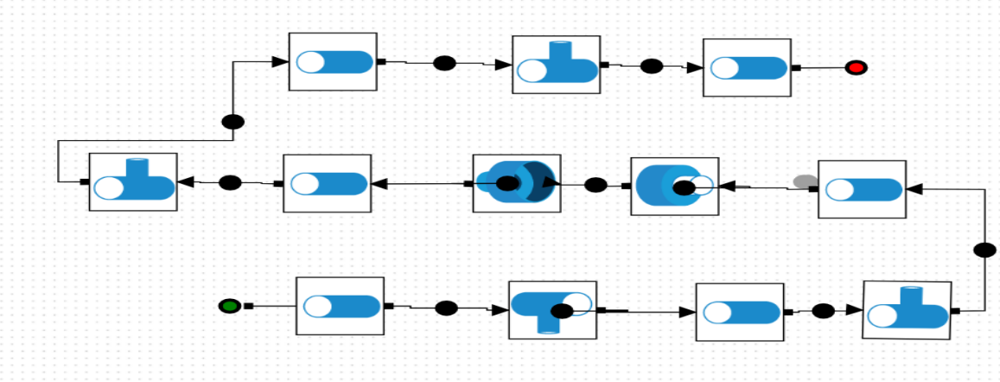

Multichamber Muffler System
Michael Raba, MSc Candidate at University of Kentucky
Created: 2025-05-20 Tue 08:31
S b
Spaceclaim Model a
Dimensions
Schematic Variants for Muffler Subcomponents

Part 1 — Chamber and Baffle

Part 2 — Fluid domain

Part 3 — Fiberglass Absorbant (gold)
Part 4 — Showing perforates (aimed at fiberglass)

Part 5 — Final Assembly View

Ansys Simulation
Simulated Transmission Loss (0–1000 Hz) by approximating muffler walls as fluid

Figure: Transmission Loss curve of the muffler between 5 Hz and 1000 Hz at 20°C.
Transmission Loss at 20°C
SIDLAB Model Submission for Transmission Loss
(link to github)
t

Sidlab Components
Simulated vs Measured Insertion Loss
Transmission Loss at 400°C and Harmonic Performance Analysis
References
Cited Works
- Munjal ML. Acoustics of Ducts and Mufflers. 2nd ed. Wiley; 2014. ISBN: 9781118443125. https://doi.org/10.1002/9781118443125
- Dokumacı E. Duct Acoustics: Fundamentals and Applications to Mufflers and Silencers. Cambridge University Press; 2021. ISBN: 9781108840750. https://doi.org/10.1017/9781108840750
Note: These references are foundational texts in muffler and duct acoustics and were consulted for system modeling, schematic development, and transmission loss analysis.